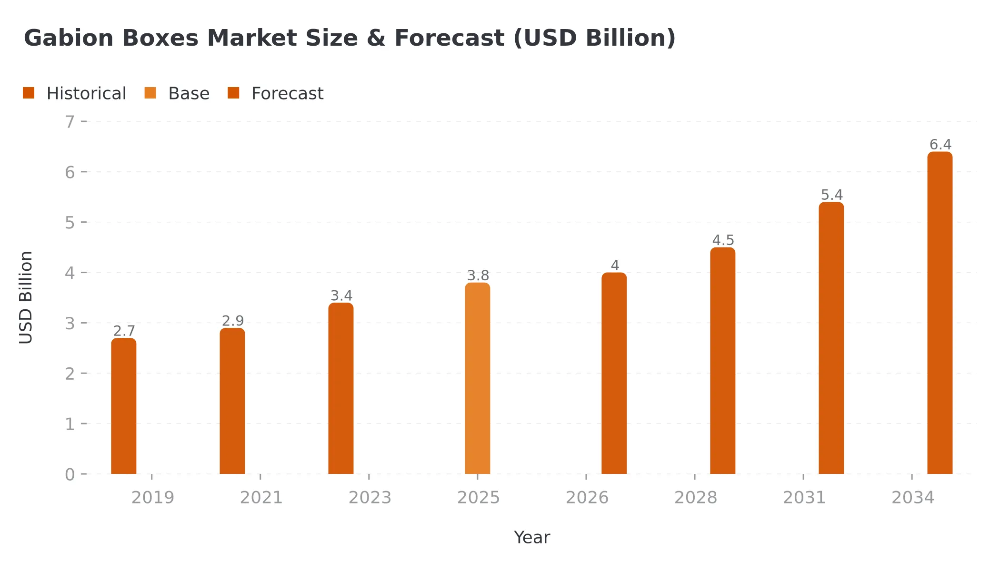
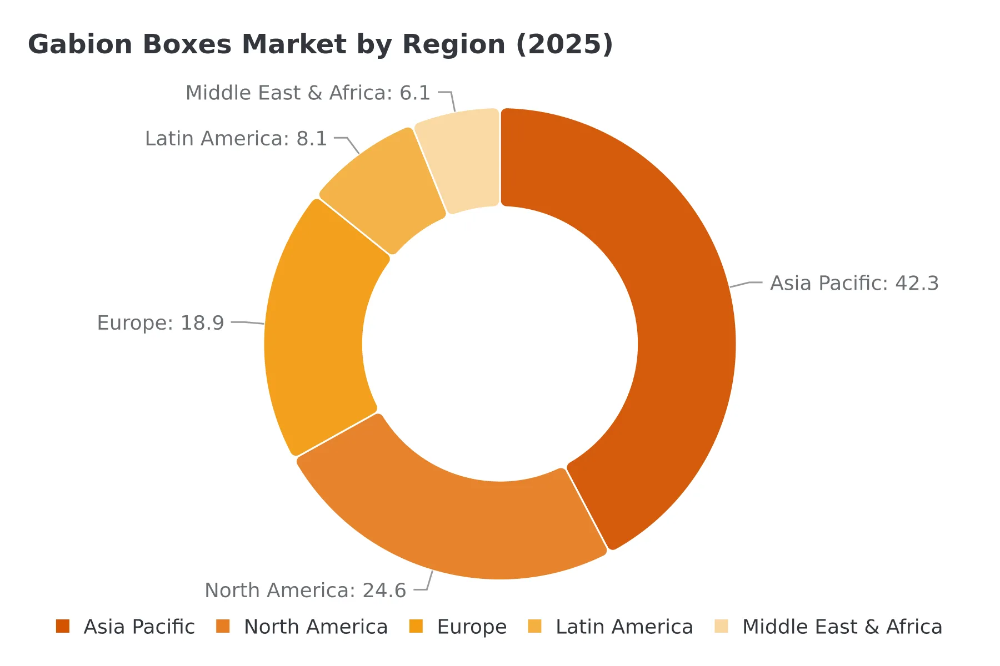
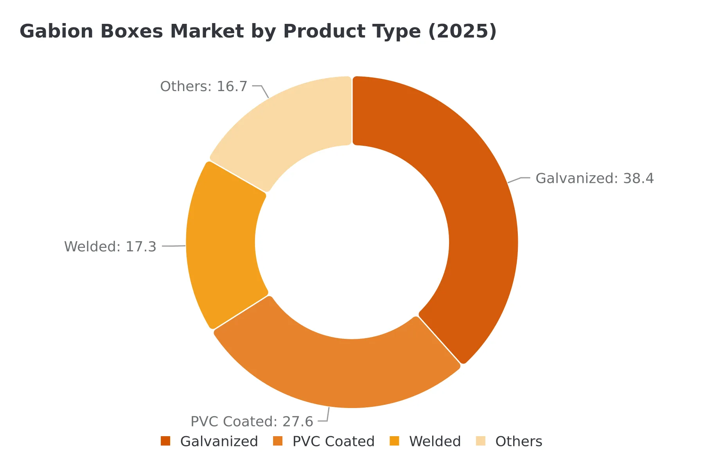

Key Takeaways
- Global gabion boxes market valued at $3.8 billion in 2025
- Expected to reach $6.4 billion by 2034 at a CAGR of 5.9%
- Galvanized Gabion Boxes held the largest product type share at 38.4%
- Asia Pacific dominated with 42.3% revenue share in 2025
- Key drivers: rising infrastructure investment, increasing erosion and flood control initiatives, and expanding road and transportation networks
- Maccaferri led the competitive landscape with the broadest global product and service portfolio
- Report spans 2025 to 2034 with 287+ pages of analysis
Gabion Boxes Market Outlook 2025-2034
The global gabion boxes market was valued at $3.8 billion in 2025 and is projected to reach $6.4 billion by 2034, expanding at a compound annual growth rate (CAGR) of 5.9% during the forecast period from 2026 to 2034, driven by accelerating infrastructure development, intensifying climate-related erosion and flood events, and growing governmental investment in hydraulic and geotechnical engineering projects worldwide.
Gabion boxes, wire mesh containers filled with rock, concrete, or other materials, have established themselves as a versatile and cost-effective solution for a broad spectrum of civil engineering applications, ranging from retaining walls and slope stabilization to channel linings, hydraulic structures, and shoreline protection. The increasing frequency and severity of extreme weather events such as flash floods, riverbank erosion, and landslides has sharply elevated the urgency among governments and private contractors alike to deploy robust, rapidly installable erosion and flood control infrastructure.
Gabion boxes are particularly favored due to their inherent permeability, flexibility, high load-bearing capacity, and long service life, which can extend beyond 50 years under proper maintenance conditions. In 2025, the construction end-user segment alone accounted for more than 47% of total market revenues, as urbanization in emerging economies such as India, China, Vietnam, and Indonesia has triggered unprecedented demand for soil retention and slope stabilization solutions.
Meanwhile, transportation infrastructure expansion in Sub-Saharan Africa and Southeast Asia has opened new frontiers for gabion box applications in embankment stabilization along highways, railway corridors, and bridges. The growing emphasis on sustainable and eco-friendly construction materials further plays to gabion boxes' strengths, as their use of natural fill materials and minimal carbon footprint aligns with green building certification criteria gaining traction globally.
Market Size and Forecast

| Metric | Value |
|---|---|
| Market Size (2025) | $3.8B |
| Forecast (2034) | $6.4B |
| CAGR (2026-2034) | 5.9% |
| Base Year | 2025 |
The market has demonstrated consistent growth from $2.7 billion in 2019 to $3.8 billion in 2025, with accelerated expansion expected through 2034 driven by multi-year national infrastructure programs in over 40 countries and substantial multilateral development bank funding for resilient infrastructure in climate-vulnerable regions.
Regional Outlook

Asia Pacific (42.3% Share)
Asia Pacific emerged as the dominant regional market for gabion boxes in 2025, accounting for $1.61 billion and approximately 42.3% of global revenues. This commanding position is underpinned by the region's massive and ongoing infrastructure construction pipeline, particularly in China, India, Indonesia, Vietnam, and the Philippines.
China's Belt and Road Initiative has catalyzed extensive cross-border road, rail, and dam construction projects that routinely specify gabion structures for slope and riverbank stabilization. India's Pradhan Mantri Gram Sadak Yojana and Bharatmala Pariyojana highway programs have collectively driven demand for hundreds of thousands of gabion retaining wall units annually. Asia Pacific is forecast to maintain the highest absolute revenue contribution through 2034, growing at a CAGR of approximately 6.8%.
North America (24.6% Share)
North America represented the second-largest regional market in 2025, capturing approximately 24.6% of global gabion boxes revenues. The United States accounted for the dominant share within the region, supported by substantial federal funding for infrastructure rehabilitation under the Infrastructure Investment and Jobs Act. Gabion boxes are widely used by the U.S. Army Corps of Engineers for stream bank protection and riverbank stabilization. North America is projected to grow at a CAGR of approximately 4.8% through 2034.
Europe (18.9% Share)
Europe held approximately 18.9% of the global gabion boxes market share in 2025. Western European nations such as Italy, France, Germany, and Switzerland have long-established traditions of deploying gabion structures in alpine and riverine environments. Maccaferri, headquartered in Italy, maintains a particularly strong market position in the European context. Europe is expected to register a CAGR of around 4.3% during the forecast period.
Latin America and Middle East & Africa (14.2% Combined)
Latin America and the Middle East and Africa represent the emerging frontiers, collectively accounting for approximately 14.2% of 2025 revenues. The Middle East and Africa region is growing at the highest regional CAGR of approximately 7.4%, driven by major infrastructure programs in Saudi Arabia (Vision 2030), the UAE, Nigeria, Ethiopia, and South Africa.
Key Growth Drivers
Rising Global Infrastructure Investment
Government-led infrastructure development programs represent the single most powerful demand driver for gabion boxes globally. In 2025, global public infrastructure spending surpassed $2.5 trillion. China allocated over $480 billion to infrastructure investment, while India's National Infrastructure Pipeline targets $1.4 trillion in cumulative investment through 2030. The World Bank committed over $30 billion in 2024 to climate-resilient infrastructure projects globally.
Escalating Incidence of Erosion and Flooding
The number of flood and landslide events globally increased by approximately 34% between 2010 and 2024. In India alone, annual economic losses from flood damage exceeded $10 billion in 2024, prompting the central government to more than double allocations for river embankment and flood protection structures. FEMA has increasingly approved gabion-based solutions in post-disaster reconstruction funding.
Expansion of Road and Transportation Networks
Transportation infrastructure construction is the second-largest end-user segment for gabion boxes. Sub-Saharan Africa's road network expansion programs are generating significant demand for gabion retaining walls along highway embankments. The transportation end-user segment is expected to grow at a CAGR of approximately 6.5% through 2034, outpacing the market average.
Sustainability Credentials and Green Building Adoption
Gabion boxes can be filled with locally sourced rock or recycled concrete, significantly reducing transportation-related carbon emissions. Their permeable structure supports groundwater recharge, while interstitial voids provide habitat for vegetation and small fauna. The architectural segment is growing at an estimated CAGR of 7.2%, broadening the product's market reach beyond traditional civil engineering.
What Are Gabion Boxes?
Gabion boxes are wire mesh containers, typically rectangular or square in shape, filled with rock, stone, or other granular materials to form gravity or semi-gravity retaining structures. They are used extensively in civil engineering for retaining walls, slope stabilization, riverbank protection, channel lining, hydraulic weirs, and flood defense. Modern gabion boxes are available in galvanized, PVC-coated, and stainless steel wire formulations, with service lives of 50 to 100 years under appropriate specifications.
Market Analysis by Product Type

| Product Type | Market Share (2025) | Key Characteristics |
|---|---|---|
| Galvanized | 38.4% | Cost-effective, widely available, standard applications |
| PVC Coated | 27.6% | Superior corrosion resistance, 25-40 year extended life |
| Welded | 17.3% | Superior rigidity, dimensional stability, aesthetic appeal |
| Others | 16.7% | Stainless steel, Galfan, specialty coatings |
Galvanized Gabion Boxes (38.4%)
Galvanized gabion boxes represented the largest product type segment in 2025, accounting for approximately $1.46 billion. They offer a cost-effective balance of corrosion resistance, structural integrity, and availability. The galvanized product segment is forecast to maintain a CAGR of approximately 5.2% through 2034.
PVC Coated Gabion Boxes (27.6%)
PVC coated gabion boxes held the second-largest product type share, driven by superior corrosion resistance and extended service life in aggressive environments such as coastal zones, acidic soils, and high-moisture riverine settings. The PVC coating can extend product life by 25 to 40 years beyond uncoated alternatives. This segment is projected to grow at a CAGR of approximately 6.4% through 2034, outpacing galvanized alternatives.
Welded Gabion Boxes (17.3%)
Welded gabion boxes, fabricated from welded wire mesh panels, are gaining share due to superior rigidity, dimensional stability, and aesthetic appeal, particularly in architectural and landscaping applications. This segment represents the fastest-growing product category in developed markets.
Need a chain-link fence replacement or upgrade? At Kestrel Metal, we supply premium galvanized and PVC-coated chain link fencing along with complete fittings and accessories. Our experienced team provides technical support and competitive pricing with worldwide shipping. Request a Quote today — we respond within 24 hours with detailed specifications and pricing for your project.